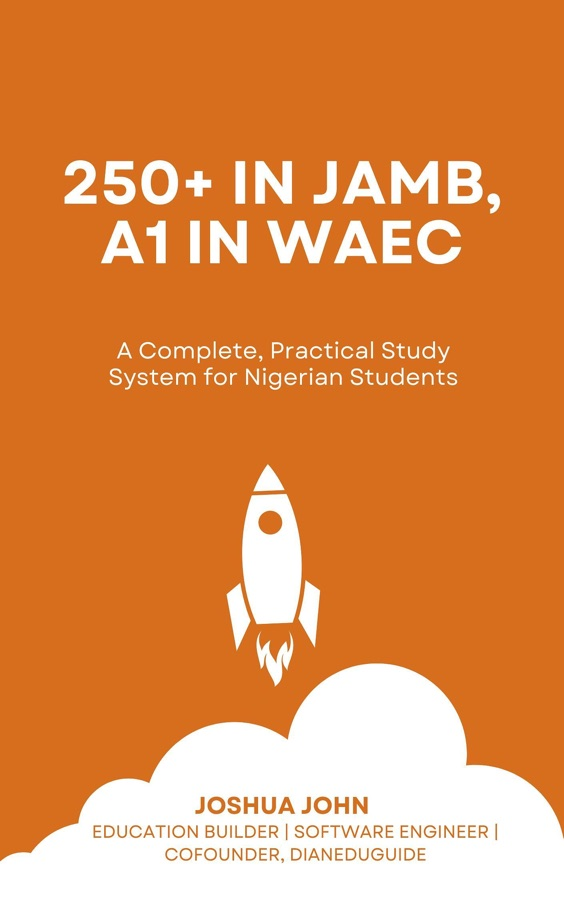

How JAMB and WAEC really work
JAMB rewards speed and recycles questions. WAEC rewards understanding. Both repeat topics, and you'll learn how to use that.
Free ebook for JAMB & WAEC candidates
250+ in JAMB, A1 in WAEC is a short, practical guide by Joshua John. It shows you what to read, what to skip, how to use past questions properly, and how to plan your days so your scores actually move.
Your copy of 250+ in JAMB, A1 in WAEC is ready.
Download the PDFTip from the book: read one chapter at a time and do the practical parts before moving on. Don't rush it.

If you nodded at even one of these, this book was written for you. Most students who fall short didn't fail because they're not smart. They read randomly, spent time on the wrong topics, used past questions the wrong way, and had no way to tell if they were getting better.
“Exams don't reward who read the most. They reward who prepared the smartest.” From chapter 1
Where this book came from
Joshua's pastor gave him his first chance to start and run a tutorial program for teenagers preparing for JAMB. Working closely with those students, he saw the same problem repeat itself.
The students weren't failing because they were dull. They lacked structure, guidance and the right study strategy: no clear starting point, no plan, no way to measure progress. Their questions, their failures and their progress shaped this book.
Since then Joshua has taught and mentored hundreds of students. This guide puts the system he teaches them into one short book.
No long theory. Each chapter is short and tells you exactly what to do.
JAMB rewards speed and recycles questions. WAEC rewards understanding. Both repeat topics, and you'll learn how to use that.
JAMB tells you the exact topics it will test. Learn to use the official syllabus to know what to read and what to ignore.
Pick one topic, understand it, practise recent questions, review your mistakes, track your score. Then repeat.
Why you should stick to the last 10 years, and why memorising answers is a trap.
Hard subjects when you're fresh, easier ones when you're tired. And why your morning shouldn't start on social media.
What to ask ChatGPT, what to search on YouTube, and how to avoid hour-long videos that teach you nothing.
Plus a personal study plan template and simple rules for exam day.
An example from chapter 9
The book shows a JAMB strategy many students never think about. If there are one or two subjects you already like and score 50 to 60 in without much reading, push those to 80 or 90.
“You didn't become perfect. You became strategic.”
Before getting this ebook, I honestly didn't know how to organise my reading. It helped me understand what to focus on and made my preparation easier. I feel much more confident going into my exams.
I liked how the ebook made studying easier to follow. Instead of jumping from one topic to another, I could prepare in a more organised way. It was really helpful during my exam preparation.
What I enjoyed most was how simple the explanations were. I didn't have to struggle to understand everything on my own. It gave me a better direction for my studies.
I used to find it difficult to stay consistent with my reading, but having a guide made a difference. I knew what to study and could track my preparation better.
I would recommend this ebook to anyone preparing for JAMB or WAEC. It is a useful study resource, especially if you need direction and want to take your preparation more seriously.
The book says it honestly: it won't magically pass exams for you. But if you apply what's inside with discipline, it will guide you.
Yes. The book normally sells for ₦5,000, but right now you can download it for free. No card, no payment later.
We're building Dian to help Nigerian students prepare for exams with a clear plan. This book is the same thinking in a form you can use today, and we'd rather you start with the right system than pay to find it.
No. It covers JAMB and WAEC. Chapter 9 has a strategy made just for JAMB, and everything else works for both.
It's short on purpose: 13 chapters you can read one at a time. The book asks you to apply each chapter before moving on, so take your time.
We'll use it to send you the book and occasional study tips and updates from Dian Education. We won't sell or share it. Every email has an unsubscribe link, or you can ask us to delete your details at any time.
You don't need to be the smartest student in your class. Start with the system.
Get the free book